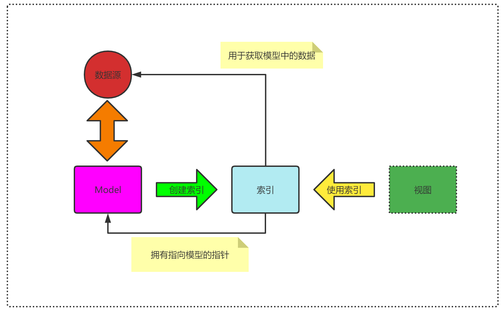
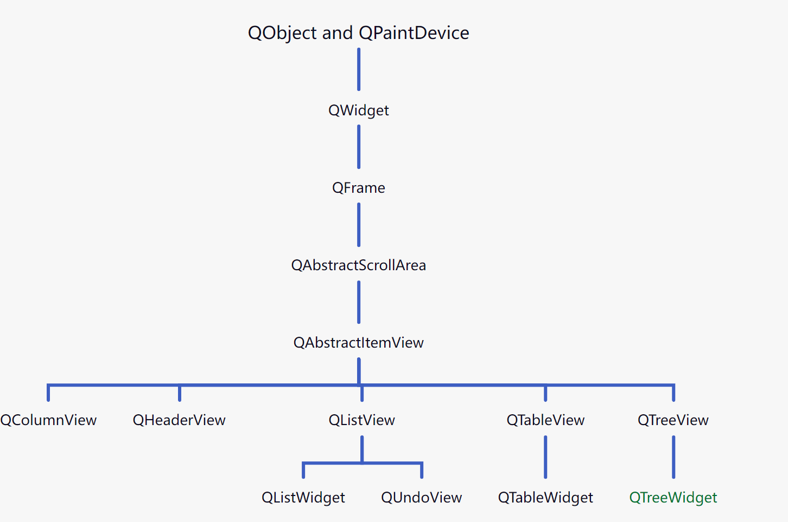
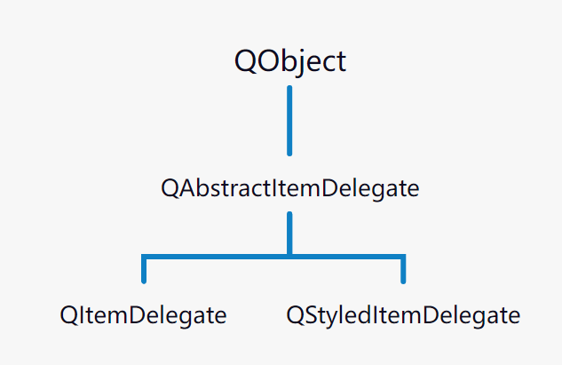

1.QT中的MVC
QT包含一组使用模型/视图结构的类，可以用来管理数据并呈现给用户。
其实QT中的MVC并不叫MVC，而是叫MVD，QT中没有Controller的说法，而是使用了另外一种抽象: Delegate (委托) ，其行为和传统的MVC是相同的。 这里delegate 类似 Control 负责协调Model和View之间的数据
模型/视图结构
- 模型与数据源进行通信，在这个体系结构中为其它组件提供了一个接口。通信的性质依赖于数据源的类型以及模型的实现方式
- 视图从模型中得到模型索引，这些都引用到数据项。通过为模型提供模型索引，视图可以从数据源中检索数据项
- 在标准的视图里，委托呈现数据项目。当一个项目被编辑，委托与模型直接利用模型索引进行通信
model/view 架构将传统的 MV 模型分为三部分：模型、视图和委托。每一个组件都由一个抽象类定义，这个抽象类提供了基本的公共接口以及一些默认实现。模型、视图和委托则使用信号槽进行交互：
- 来自模型的信号通知视图，其底层维护的数据发生了改变
- 来自视图的信号提供了有关用户与界面进行交互的信息
- 来自委托的信号在用户编辑数据项时使用，用于告知模型和视图编辑器的状态
模型视图设计模式
- 模型与视图相分离
- 模型对外提供标准接口存取数据(不关心数据如何显示)
- 视图自定义数据的显示方式(不关系数据如何组织存储)

- 模型视图的工作机制
- 当数据发生改变时–模型发出信号通知视图
- 当用户与视图进行交互时–视图发出信号提供交互信息
2.模型
2.1 模型定义
- 在模型/视图架构中，模型提供了一个标准的接口供视图和委托访问数据。 QT中的模型类层次结构如下图所示：

- 所有的模型都是
QAbstractItemModel的子类。这个类定义了供视图和委托访问数据的接口 - 模型并不存储数据本身，只是操作和访问数据源。可以将数据存储在一个数据结构中、另外的类中、文件中、数据库中，或者其他你所能想到的东西中
QAbstractItemModel提供给数据一个接口，它非常灵活，基本满足views的需要，无论数据用什么样的形式表现，如tables,lists,trees- 如果model基于list、table形式的数据结构，可从
QAbstractListModel、QAbstractTableModel开始做起，因为它们提供了适当的常规功能的缺省实现 QStringListModel用于存储简单的QString列表QStandardItemModel管理复杂的树型结构数据项，每项都可以包含任意数据；QDirModel提供本地文件系统中的文件与目录信息QSqlQueryModel、QSqlTableModel、QSqlRelationTableModel用来访问数据库- 假如这些标准Model不满足需要，可子类化
QAbstractItemModel、QAbstractListModel、QAbstractTableModel等来定制
| 模型 | 说明 |
|---|---|
| QStringListModel | 保存QString数据类型的单一数据列表的类 |
| QStandardItemModel | 通过树形视图提供读取任意数据的类 |
| QFileSystemModel | 提供文件系统中的文件和目录信息的类 |
| QSqlQueryModel | 通过模型类存取数据库信息的类 |
2.2 模型中的索引
模型中的数据使用唯一的索引来访问
模型索引是数据与视图分离的重要机制
QModelIndex是QT中的模型索引类型：包含具体数据的访问途径，包含一个指向模型的指针模型索引通过行、列和父项（row、column和parent）访问数据
模型索引的意义如下图所示:

2.3 模型中的数据角色
- 模型中的数据在视图中的用途（显示方式）可能不同
- 模型必须为数据设置特定数据角色（数据属性）
- 数据角色用于提示视图数据的作用
- 数据角色是不同视图以统一风格显示数据的标准
3.视图类
| 控件 | 说明 |
|---|---|
| QListView | 列表显示数据的控件 |
| QTableView | 实现表格视图的模型/视图 |
| QTreeView | 实现树形视图的模型/视图 |
在MVC模型/视图体系结构中，视图从模型中获取数据项并呈现给用户。内容和表示的分离是通过使用QAbstractItemModel提供的标准模型接口，QAbstractItemView提供的标准视图接口，以及使用了模型索引提供了一种通用的方法来表示数据。 QT中视图类的层次结构如下图所示：

4.委托
- 委托负责协调model和view之间的数据edit(编辑)和render(渲染)
QAbstractItemDelegate则是所有委托的抽象基类。自 QT 4.4 依赖，默认的委托实现是QStyledItemDelegate。但是，QStyledItemDelegate和QItemDelegate都可以作为视图的编辑器，二者的区别在于，QStyledItemDelegate使用当前样式进行绘制。在实现自定义委托时，推荐使用QStyledItemDelegate作为基类，或者结合 QT style sheets。
